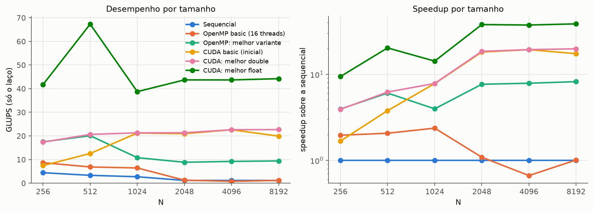
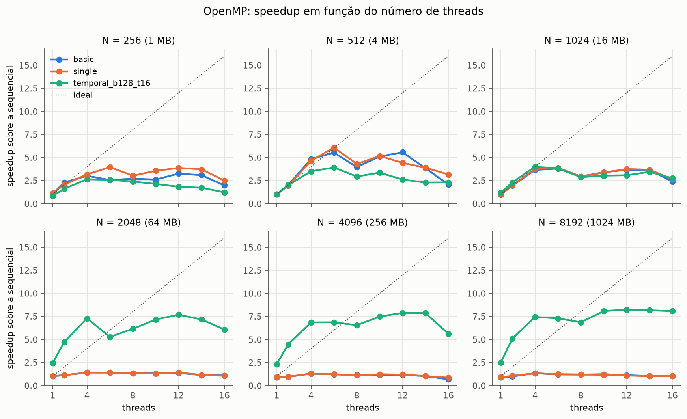
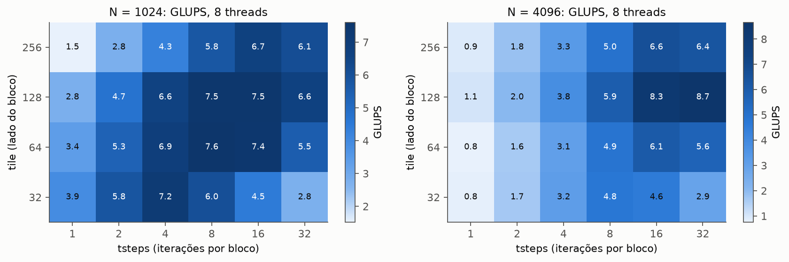
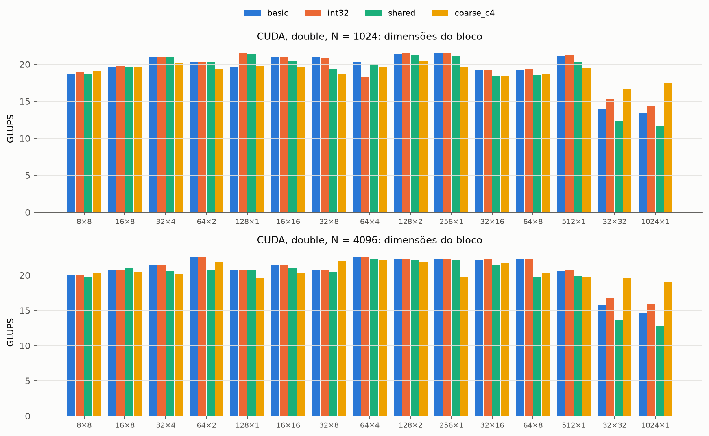
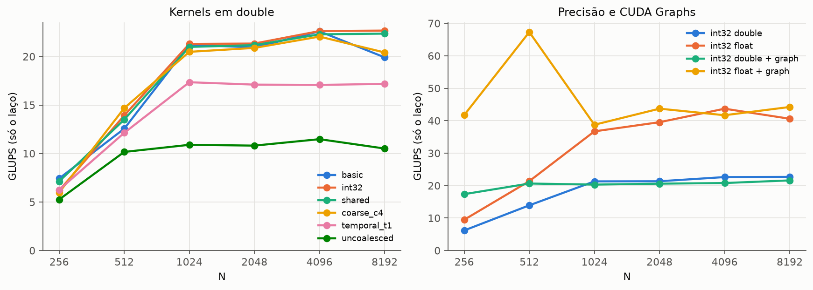
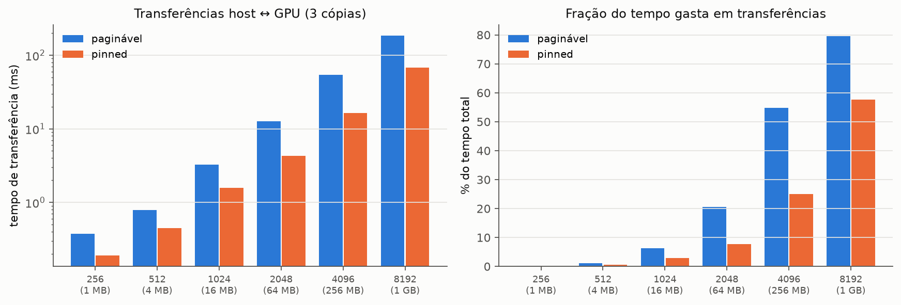

Resumo. Este relatório apresenta três implementações do método de Jacobi em duas dimensões (sequencial, OpenMP e CUDA), sua validação numérica e um estudo experimental de desempenho. O algoritmo faz cerca de 0,25 operação de ponto flutuante por byte movido e, por isso, é limitado pela banda de memória nas duas plataformas. Todas as variantes em double produzem resultado idêntico bit a bit ao da versão sequencial (erro absoluto e relativo iguais a zero). Na CPU, a paralelização direta fica presa ao teto de banda da RAM (no máximo 1,4× com dados fora da cache), e a blocagem temporal foi a otimização decisiva: cerca de 8× sobre a versão sequencial. Na GPU, o kernel básico com acesso coalescido já atinge cerca de 100% da banda medida (cerca de 19× sobre a sequencial em double). Ali, shared memory e coarsening não trazem ganho, e a blocagem temporal piora. Os ganhos vieram de reduzir os bytes movidos (float, 2×), o custo de lançamento (CUDA Graphs, até 2,8×) e o custo das transferências (memória pinned, 3,3×).
O método de Jacobi resolve a equação de Laplace numa malha N × N com bordas fixas. A cada iteração, cada célula interna recebe a média dos quatro vizinhos da iteração anterior (stencil de 5 pontos):
novo[i][j] = 0.25 * (velho[i-1][j] + velho[i+1][j] + velho[i][j-1] + velho[i][j+1]), 1 ≤ i, j ≤ N-2As leituras ocorrem em velho e as escritas em novo, então as células de uma mesma iteração são independentes e podem ser calculadas em paralelo. Entre iterações existe dependência. Todas as versões usam dois buffers contíguos (A[i*N + j]), trocam os ponteiros ao fim de cada iteração (sem copiar a matriz) e inicializam as bordas nos dois buffers.
Matriz inicial (determinística). As bordas valem 100 (topo), 25 (base), 75 (esquerda) e 50 (direita). O interior recebe 1 + (31·i + 17·j) mod 100. Esse padrão não tem zeros no interior, o que evita os números subnormais que uma matriz inicial nula geraria nas regiões ainda não alcançadas pelas bordas e que distorceriam os tempos.
| Item | Valor |
|---|---|
| CPU | Intel Core i5-13400F (híbrida): 6 núcleos P com Hyper-Threading + 4 núcleos E = 10 núcleos e 16 threads; L1d de 48 KB e L2 de 1,25 MB por núcleo P; L3 compartilhado de 20 MB; AVX2 |
| RAM | 7,7 GiB visíveis no WSL 2; banda de cópia medida: 26 a 28 GB/s |
| GPU | NVIDIA GeForce RTX 3060 (Ampere GA106, sm_86): 28 SMs, 12 GB de GDDR6 com barramento de 192 bits, L2 de 2,25 MB; banda teórica de 360 GB/s e banda de cópia medida de 332 GB/s; PCIe 4.0 x16 |
| Sistema | Windows 11 Pro + WSL 2 (kernel 5.15.133.1-microsoft-standard-WSL2), Ubuntu 24.04.1 LTS; driver NVIDIA 610.88 |
| Compiladores | GCC 13.3.0 com -O3 -march=native -ffp-contract=off -fopenmp; CUDA 13.3 (nvcc V13.3.73) com -arch=sm_86 --fmad=false; CMake 3.28.3 (build Release) |
Limitação do ambiente. O WSL apresenta a CPU como 8 núcleos × 2 threads e esconde a diferença entre núcleos P e E. Por isso, OMP_PLACES=cores não garante núcleos P, e o hipervisor pode mover as CPUs virtuais entre os núcleos físicos. O limite de 7,7 GiB de RAM fixou o maior tamanho em N = 8192 (1 GB para as duas matrizes).
O projeto é compilado com CMake e gera três executáveis (jacobi_seq, jacobi_omp e jacobi_cuda), o comparador compare e dois medidores de banda. Todos aceitam as mesmas opções de linha de comando (--n, --iters, --reps, --init, --dump) e gravam uma linha CSV por repetição, com o tempo do laço, o tempo de transferência (GPU) e o desempenho em MLUPS (milhões de atualizações de célula por segundo).
Laço duplo por linha (i por fora, j por dentro), ponteiros __restrict__ para as três linhas lidas e a linha escrita, e troca de ponteiros entre iterações. O GCC vetoriza o laço interno com AVX2 (4 double por instrução). A memória é alinhada em 64 bytes.
| Variante | Descrição |
|---|---|
basic | #pragma omp parallel for schedule(static) no laço de linhas, com uma região paralela por iteração. A inicialização é feita em paralelo com a mesma divisão de linhas (first touch). |
single | Uma única região parallel para todas as iterações, com omp for dentro. Cada thread troca a sua cópia privada dos ponteiros, e a barreira implícita do for separa as iterações. Elimina o custo de abrir e fechar a região a cada iteração. |
temporal | Blocagem temporal com sobreposição. Cada bloco de tile × tile células é copiado, com um halo de tsteps células, para dois buffers locais da thread, que cabem na L2. O bloco avança tsteps iterações localmente e só então o miolo volta para a matriz global. A RAM passa a ser lida e gravada uma vez a cada tsteps iterações, ao custo de recalcular o halo, que encolhe uma célula por passo. Os blocos são distribuídos com omp for collapse(2) schedule(static). |
// basic: laço paralelo por linhas (src/omp/solver.cpp)
#pragma omp parallel for schedule(static)
for (size_t i = 1; i < n - 1; i++) {
const double *up = in + (i-1)*n, *middle = in + i*n, *down = in + (i+1)*n;
double* dst = out + i*n;
for (size_t j = 1; j < n - 1; j++)
dst[j] = 0.25*(up[j] + down[j] + middle[j-1] + middle[j+1]);
}O host aloca a matriz inicial e a matriz de resultado separadamente (para que cada repetição comece do mesmo estado), envia a matriz inicial para os dois buffers da GPU, executa as iterações trocando os ponteiros no host e traz o resultado de volta. Antes de medir, faz um aquecimento (criação do contexto e carga do kernel). O tempo do laço é medido com steady_clock, sincronizando com a GPU antes de parar o cronômetro, e as transferências (2 envios e 1 retorno) são medidas à parte.
| Kernel | Descrição |
|---|---|
basic | Uma thread por célula interna: x → coluna e y → linha, de modo que threads vizinhas de um warp acessam endereços contíguos (acesso coalescido). Índices size_t. |
int32 | Igual ao basic, com índices int (menos instruções de endereço). |
uncoalesced | Contraexemplo: x → linha. As threads de um warp tocam 32 linhas diferentes, e os acessos não coalescem. |
shared | Cada bloco carrega a sua região e um halo de uma célula em shared memory e calcula a partir dela. |
coarse | Cada thread calcula coarsen linhas da mesma coluna e reaproveita em registradores os valores de cima e de baixo. |
temporal | Blocagem temporal em shared memory: o bloco carrega a região com halo de tsteps células e avança tsteps iterações por lançamento, com __syncthreads() entre os passos. |
| Opções | --bx/--by (dimensões do bloco), --prec float|double, --pinned (memória do host fixada, para DMA direto) e --graph (100 lançamentos gravados num CUDA Graph e repetidos). |
// basic / int32 (src/cuda/solver.cu)
template <typename T, typename Idx>
__global__ void sweep_global(const T* __restrict__ in, T* __restrict__ out, Idx n) {
const Idx j = (Idx)blockIdx.x*blockDim.x + threadIdx.x + 1; // coluna
const Idx i = (Idx)blockIdx.y*blockDim.y + threadIdx.y + 1; // linha
if (i < n - 1 && j < n - 1)
out[i*n + j] = T(0.25)*(in[(i-1)*n + j] + in[(i+1)*n + j] + in[i*n + j-1] + in[i*n + j+1]);
}double ocupam 1 MB, 4 MB, 16 MB, 64 MB, 256 MB e 1 GB, cobrindo L2, L3 e RAM.scripts/run_experiments.sh roda os 8 experimentos (2574 medições, 1041 s), e analysis/plot.py gera os gráficos e as tabelas. Cada configuração medida também é validada contra a sequencial.O programa compare lê duas matrizes binárias (com N e número de iterações no cabeçalho, recusando execuções diferentes), percorre todos os elementos e informa o maior erro absoluto e o maior erro relativo, com a posição, além de detectar NaN e infinito:
erro_abs(i,j) = |A_teste(i,j) − A_seq(i,j)| erro_rel(i,j) = erro_abs(i,j) / |A_seq(i,j)|Onde a referência é zero, o critério usa o erro absoluto. Tolerâncias adotadas (erro relativo máximo): 10−12 em double e 10−4 em float. Em float, a tolerância inicial era 10−5, mas um caso sem erro de implementação ficou fora dela (N = 512 com 4000 iterações, erro de 1,9·10−5). O erro do float (cerca de 6·10−8 por operação) acumula ao longo das iterações, e 10−4 deixa uma margem de cerca de 5× sobre o pior caso medido.
| Conjunto | Casos | Resultado | Maior erro abs. | Maior erro rel. |
|---|---|---|---|---|
validate.sh: todas as variantes OpenMP e CUDA em double (N = 5, 64, 513, 1001, 1024; 1, 100 e 101 iterações; 1, 3, 8 e 16 threads; blocos 16×16, 32×8, 128×1, 7×5 e outros; grafos, pinned e 2 repetições) | 825 | 825 idênticos bit a bit | 0 | 0 |
validate.sh: CUDA em float, mesmos tamanhos | 45 | 45 OK | 1,8·10−5 | 2,5·10−7 |
Execuções dos experimentos em double (até N = 8192) | 51 | 51 OK, erro zero | 0 | 0 |
Execuções dos experimentos em float (até N = 8192, até 15000 iterações) | 6 | 6 OK | 9,9·10−4 | 1,9·10−5 |
Por que o resultado em double é exato. Nenhuma variante faz redução, cada célula é calculada com a mesma expressão e a mesma ordem das somas (cima + baixo + esquerda + direita), e a contração em FMA está desligada (-ffp-contract=off na CPU e --fmad=false na GPU). Vetorização, ordem de execução das threads, formato do bloco CUDA e blocagem temporal não mudam a sequência de operações de nenhuma célula, então o resultado é reproduzido bit a bit. Isso é mais forte do que ficar dentro de uma tolerância.
Cada atualização lê 4 vizinhos e grava 1 valor com 4 operações de ponto flutuante. Como os vizinhos são reaproveitados pela cache entre células próximas, o tráfego mínimo com a memória principal é de 16 bytes por atualização em double (8 de leitura e 8 de escrita), mais 8 bytes de write-allocate na CPU. A intensidade aritmética é de cerca de 0,25 FLOP/byte, muito abaixo do ponto de equilíbrio das duas plataformas: o algoritmo é limitado pela banda de memória sempre que os dados não cabem na cache. Os tetos esperados, a partir das bandas medidas com programas de cópia (tools/bandwidth_cpu.cpp e tools/bandwidth_gpu.cu), são:
| Plataforma | Banda medida | Bytes por atualização | Teto |
|---|---|---|---|
| CPU, dados na RAM | 27,9 GB/s | 16 | ≈ 1,7 GLUPS |
GPU, double | 332 GB/s (360 teórico) | 16 | ≈ 20,8 GLUPS (22,5) |
GPU, float | 332 GB/s | 8 | ≈ 41,5 GLUPS |

| N | Sequencial | OpenMP basic (16 t) | Melhor OpenMP | CUDA basic | Melhor CUDA double | Melhor CUDA float |
|---|---|---|---|---|---|---|
| 256 | 0,219 s | 2,0× | 4,0× (single, 6 t) | 1,7× | 3,9× (grafos) | 9,4× |
| 512 | 0,314 s | 2,1× | 6,1× (single, 6 t) | 3,8× | 6,2× (grafos) | 20,3× |
| 1024 | 0,384 s | 2,4× | 4,0× (temporal, 4 t) | 7,8× | 7,8× | 14,3× |
| 2048 | 0,908 s | 1,1× | 7,7× (temporal, 12 t) | 18,2× | 18,5× | 37,9× |
| 4096 | 0,862 s | 0,7× | 7,9× (temporal, 12 t) | 19,4× | 19,4× | 37,5× |
| 8192 | 0,938 s | 1,0× | 8,2× (temporal, 12 t) | 17,4× | 19,8× | 38,6× |
Sequencial. O desempenho cai de 4,5 GLUPS (N = 256, dados na L2) para 2,7 GLUPS (N = 1024, no L3) e para cerca de 1,1 GLUPS quando os dados estão na RAM. Esses 1,1 GLUPS correspondem a cerca de 26 GB/s contando o write-allocate, perto da banda medida: uma única thread já quase satura a memória, o que explica o comportamento das versões paralelas na CPU.
GPU por tamanho. Com matrizes pequenas, o tempo de cada iteração na GPU (cerca de 10 µs para N = 256) é dominado pelo custo de lançar o kernel, e o desempenho fica baixo. A partir de N = 1024, a GPU fica no teto de banda e o desempenho se estabiliza em 21 a 22,6 GLUPS (double). O speedup sobre a sequencial cresce com N porque a CPU perde a cache e a GPU não perde nada.

| N | 1 | 2 | 4 | 6 | 8 | 10 | 12 | 14 | 16 |
|---|---|---|---|---|---|---|---|---|---|
| 256 | 1,07 | 2,28 | 3,01 | 2,55 | 2,69 | 2,60 | 3,24 | 3,07 | 1,96 |
| 512 | 0,99 | 2,00 | 4,81 | 5,52 | 3,96 | 5,10 | 5,55 | 3,82 | 2,07 |
| 1024 | 0,96 | 1,92 | 3,63 | 3,79 | 2,94 | 3,38 | 3,65 | 3,64 | 2,37 |
| 2048 | 1,01 | 1,10 | 1,40 | 1,40 | 1,33 | 1,30 | 1,36 | 1,12 | 1,09 |
| 4096 | 0,92 | 0,94 | 1,28 | 1,20 | 1,14 | 1,16 | 1,15 | 1,02 | 0,67 |
| 8192 | 0,88 | 0,98 | 1,33 | 1,19 | 1,18 | 1,22 | 1,12 | 1,02 | 1,01 |
schedule(static) dá a mesma quantidade de linhas a todas. Nesta máquina, o recomendado é usar no máximo 12 threads.single)Ganha onde há muitas iterações curtas: o melhor speedup passa de 3,24× para 3,95× em N = 256 e de 5,55× para 6,06× em N = 512. Nos tamanhos grandes não muda nada: criar a região custa alguns microssegundos, desprezíveis diante de iterações de milissegundos. A barreira entre iterações continua necessária; só o custo de criar a região desaparece.

tile) e do número de iterações por bloco (tsteps).tsteps = 1), o desempenho é igual ao da básica (0,8 a 1,1 GLUPS em N = 4096). Isso confirma que o ganho vem do reuso temporal, não da blocagem espacial.tsteps, e o desempenho sobe até tsteps = 16 ou 32. Com tile = 32, o halo recalculado domina: com tsteps = 16, a região local tem (32 + 32)² células para produzir 32², ou 4× mais trabalho. Com tile = 256, os dois buffers locais (cerca de 1,3 MB) passam da L2 de um núcleo P (1,25 MB). O melhor é tile = 128 com tsteps = 16 ou 32 em N = 4096, e tile = 64 com tsteps = 8 em N = 1024, onde o ganho é pequeno porque o L3 já entrega banda suficiente.Foram comparados OMP_PROC_BIND = close e spread com OMP_PLACES = cores e threads, contra nenhuma fixação. Não houve efeito consistente. Com dados na RAM, fixar ganha até cerca de 10% com 4 threads (1,48 → 1,64 GLUPS). Com N = 1024, as diferenças ficam dentro da variação entre execuções, que é alta no WSL (com 12 threads, a mesma configuração deu 13,5 GLUPS num experimento e 9,9 em outro). O motivo provável é que, no WSL, as threads são fixadas em CPUs virtuais que o hipervisor continua movendo entre os núcleos físicos.
| Versão | N | Sem vet. | SSE2 | AVX2 | AVX2 / sem vet. |
|---|---|---|---|---|---|
| Sequencial | 256 | 2.487 | 3.652 | 4.504 | 1,81 |
| Sequencial | 1024 | 2.079 | 2.474 | 2.727 | 1,31 |
| Sequencial | 4096 | 1.095 | 1.074 | 1.182 | 1,08 |
| OpenMP basic, 8 t | 256 | 6.642 | 10.916 | 12.083 | 1,82 |
| OpenMP basic, 8 t | 1024 | 7.547 | 7.703 | 9.762 | 1,29 |
| OpenMP basic, 8 t | 4096 | 1.509 | 1.384 | 1.436 | 0,95 |
Com dados na cache, o AVX2 dá de 1,3× a 1,8×, e o SSE2 fica no meio do caminho. O ganho fica longe dos 4× teóricos porque o laço já é limitado pela banda da cache. Com dados na RAM, a vetorização não ajuda (0,9× a 1,1×): quando o limite é a memória, fazer as contas mais rápido não muda nada. O resultado é idêntico bit a bit com e sem vetorização.
Com N ≥ 1024, o kernel básico alcança 21 a 22,6 GLUPS em double, o que equivale a 340 a 360 GB/s com 16 bytes por atualização: o mesmo que a cópia medida (332 GB/s, dentro da variação de cerca de 5% entre execuções) e de 94% a 100% do pico teórico. O kernel básico já está no teto de banda da GPU. É cerca de 19× a versão sequencial, o que o modelo de banda explica: a razão entre as bandas das duas memórias é de 332 / 27,9 ≈ 12×, e a CPU ainda move 24 bytes por atualização (com o write-allocate) contra 16 na GPU, o que dá 12 × 1,5 ≈ 18×. Também é 2,4× a melhor versão OpenMP com dados na RAM (blocagem temporal).

double de quatro kernels para 15 formatos de bloco, com N = 1024 e N = 4096.x (64×2, 64×4, 128×2, 256×1) ficam entre 21 e 22,6 GLUPS. O melhor bloco com N = 4096 foi 64×2.sm_86 comporta até 1536 threads, então só cabe um bloco de 1024 por SM, e a ocupação fica em 67%. Há também menos blocos para equilibrar o trabalho entre os 28 SMs. O coarse sofre menos nesses blocos (17 a 19,6 GLUPS), porque cada thread tem mais trabalho independente.
double por tamanho; à direita, float × double e o efeito dos CUDA Graphs.| Variante | Resultado | Explicação |
|---|---|---|
int32 | Igual à basic com o mesmo bloco (±1%) | Menos instruções de endereço, mas o limite é a memória. |
uncoalesced | 2× mais lenta (10,5 a 11,5 GLUPS) | Cada warp toca 32 linhas diferentes, e cada acesso vira várias transações. Mostra a importância do acesso coalescido. |
shared | Igual (22,3 GLUPS) | As caches L1 e L2 já aproveitam o reuso entre vizinhos. A shared memory não reduz o tráfego com a memória global, que é o gargalo. |
coarse | Igual (22,1 GLUPS); de 1 a 16 linhas por thread dão quase o mesmo | Economiza leituras da cache, que não são o gargalo. |
temporal | Resultado negativo: 17 a 18,6 GLUPS (31 em float, contra 40 da int32) | Ver abaixo. |
Por que a blocagem temporal não funcionou na GPU, ao contrário da CPU:
tsteps = 2, só 28×12 = 336 das 512 threads produzem resultado (66%), e o desperdício cresce rápido com tsteps.__syncthreads() a cada passo, e as threads da borda ficam ociosas enquanto a região válida encolhe.double. A GA106 faz contas em double a 1/64 da velocidade do float (cerca de 0,2 TFLOPS), e o trabalho redundante consome uma fração grande disso. Como o float também perde, a sincronização e o desperdício pesam pelo menos tanto quanto o double.tsteps = 1 ela fica abaixo da basic (18,6 contra 22,6 GLUPS), o que mede o custo da própria estrutura. Uma implementação eficiente exigiria blocagem 2,5D com registradores.Com N = 256, cada iteração dura cerca de 10 µs na GPU, e o tempo é dominado pelo lançamento do kernel (6 a 7 GLUPS). Gravando 100 lançamentos num CUDA Graph e repetindo o grafo, o desempenho vai a 17,4 GLUPS (2,8×). Em N = 512, vai de 12 a 14 para 20,6 GLUPS (1,5×). Com N ≥ 1024, os grafos não mudam nada: o kernel já é longo o bastante para esconder o custo de lançamento.
float × doubleEm float, a int32 chega a 37 a 44 GLUPS com N ≥ 1024, cerca de 2× a versão em double, porque move metade dos bytes. Isso bate com o teto de cerca de 41,5 GLUPS e é outra confirmação de que o limite é a banda de memória, não o processamento em double (que é 64× mais lento que o float nesta GPU, mas continua ocioso). Com N = 512 e grafos, chega a 67 GLUPS: as duas matrizes somam 2 MB e cabem na L2 de 2,25 MB, então o gargalo deixa de ser a memória principal. O preço é a precisão: erro relativo de até 1,9·10−5 (seção 4).

Com N = 4096 (3 cópias de 128 MB), a memória paginável leva 54 ms (7,1 GB/s) e a pinned, 16 ms (23,6 GB/s, compatível com PCIe 4.0 x16): 3,3× mais rápido. Com memória paginável, as transferências representam 55% do tempo total com N = 4096 (60 iterações) e 80% com N = 8192 (16 iterações); com pinned, 25% e 58%. Contando as transferências, o speedup de ponta a ponta com N = 8192 cai para 4,1× (paginável) e 8,2× (pinned), contra 19,8× só no laço. Esse peso depende do número de iterações: as transferências ocorrem uma vez e o laço cresce com as iterações, então numa execução até a convergência, com milhares de iterações, elas ficam desprezíveis.
| Otimização | Impacto | Motivo |
|---|---|---|
OpenMP parallel for (basic) | 1,3× a 1,4× (até 5,5× na cache) | A RAM já está quase saturada com uma thread. |
| Região paralela única | até +22% em N pequeno; nulo em N grande | Remove o custo de criar a região por iteração. |
| Blocagem temporal (CPU) | ≈ 6× sobre a basic; 7,7× a 8,2× sobre a sequencial | Reduz o tráfego com a RAM pelo fator tsteps. |
| Afinidade de threads | até +10%, inconsistente | O WSL esconde a topologia real. |
| Vetorização AVX2 | 1,3× a 1,8× na cache; nulo na RAM | Só ajuda quando o limite não é a memória. |
| CUDA básico coalescido | ≈ 19× sobre a sequencial | No teto de banda da GPU (≈ 12× a da CPU). |
| Acesso não coalescido (contraexemplo) | 2× mais lento | Mais transações por warp. |
| Formato do bloco CUDA | até 1,6× entre o pior e o melhor | Coalescência em x e ocupação dos SMs. |
Shared memory, coarsening, índices int | nulo | Atacam a latência e as instruções, não a banda. |
| Blocagem temporal (GPU) | −18% a −25% (negativo) | Recálculo do halo, sincronização e baixa ocupação. |
float | ≈ 2× | Metade dos bytes por atualização. |
| CUDA Graphs | até 2,8× (N = 256); nulo com N ≥ 1024 | Reduz o custo de lançamento. |
| Memória pinned | transferências 3,3× mais rápidas | DMA direto, sem cópia intermediária. |
float), o custo de lançamento (grafos) e o custo das transferências (pinned).double em todas as variantes, e erro relativo de até 1,9·10−5 em float, dentro da tolerância de 10−4.Limitações e trabalhos futuros. Os experimentos rodaram no WSL, que esconde os núcleos P e E e aumenta a variação entre execuções; rodar em Linux nativo permitiria medir a afinidade de verdade. Outros passos possíveis: blocagem temporal 2,5D na GPU (com streaming numa dimensão e registradores), comparação com uma GPU de datacenter, mais rápida em double, e uso do Nsight Compute para confirmar a banda efetiva dos kernels.
cmake -S . -B build -DCMAKE_BUILD_TYPE=Release # jacobi_cuda só é gerado se houver nvcc
cmake --build build -j
./build/jacobi_seq --n 4096 --iters 60 --reps 5 --header
OMP_NUM_THREADS=12 ./build/jacobi_omp --variant temporal --tile 128 --tsteps 16 --n 4096 --iters 60
./build/jacobi_cuda --variant int32 --bx 64 --by 2 --prec float --graph --pinned --n 4096 --iters 60
./build/compare seq.bin teste.bin --tol 1e-12 # maiores erros absoluto e relativo
scripts/validate.sh # validação completa → results/validation.csv
scripts/collect_env.sh # ambiente → results/env.txt
scripts/run_experiments.sh # experimentos → results/raw/*.csv
.venv/bin/python analysis/plot.py # gráficos e tabelas → results/figures/, results/summary.mdTodos os dados brutos (results/raw/), as figuras e a análise completa (report/analise.md) estão no repositório.